Protótipo de Baixa e Alta Fidelidade
Visões do Protótipo de Baixa Fidelidade
Telas
O protótipo começa na tela inicial do aparelho móvel:
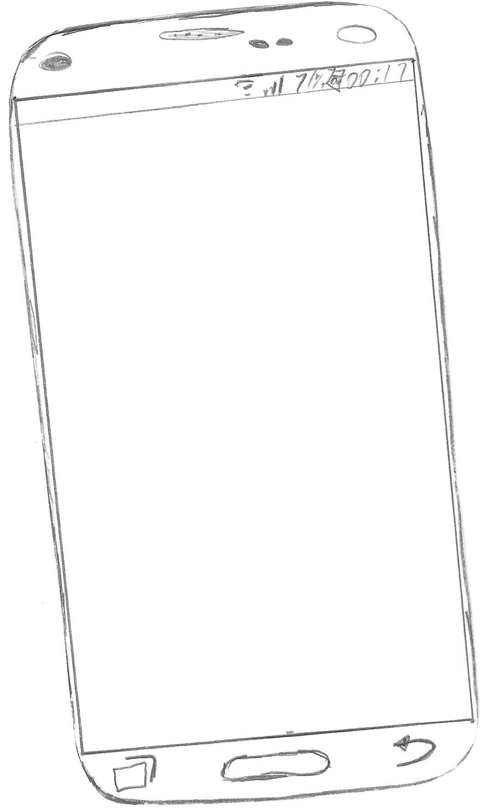
Ao acessar o app, abre a tela de login para o usuário:
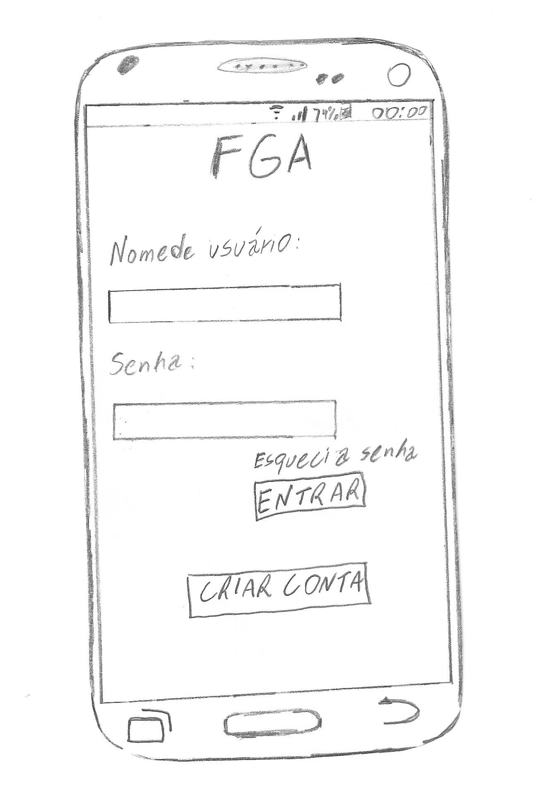
Se o usuário não possuir uma conta, ao clicar em "Criar conta" abre essa tela:
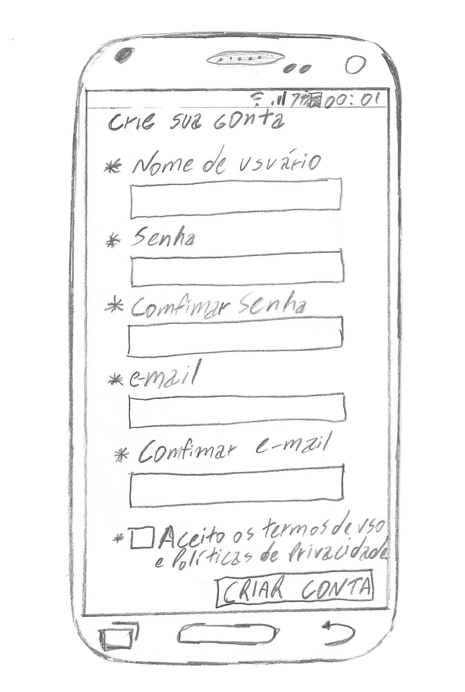
Se ele esquecer sua senha, ao clicar em "Esqueci a senha", abre esta tela:
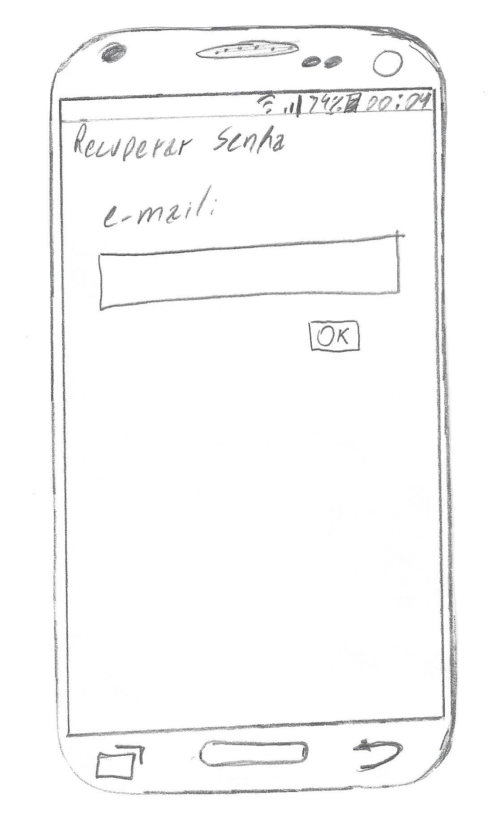
Após o login no app, o usuário decide qual serviço usar:
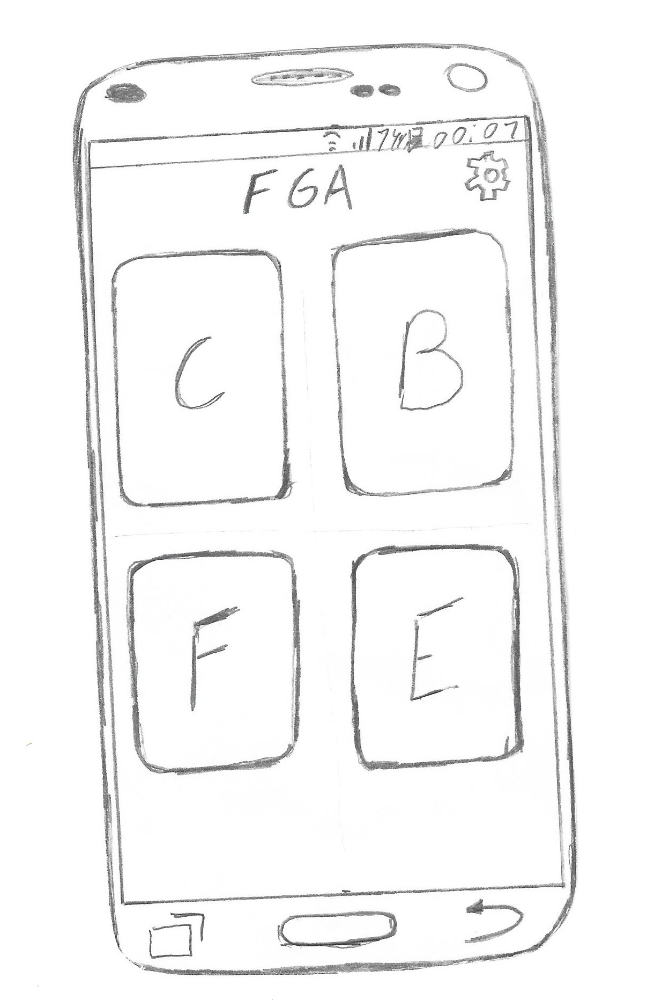
Ao escolher o serviço Car Defense, o usuário entrar diretamente no feed, a tela principal:
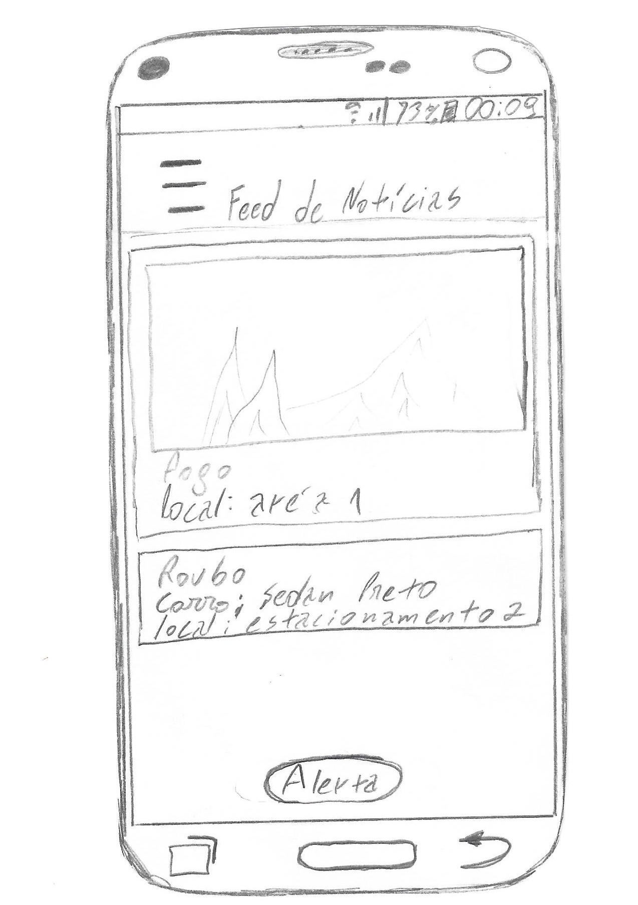
Quando o usuário quiser fazer um alerta, após clicar no botão, entrará diretamente na tela de alerta de roubo:

Ao deslizar para mudar o tipo de alerta, o usuário encontrará o alerta de desastres naturais:

Deslizando mais uma vez, o usuário encontrará a tela de alertas privados:
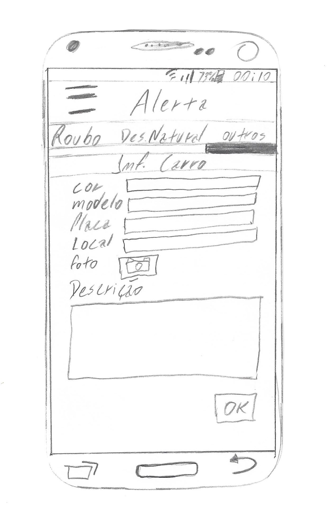
Ao clicar no menu (canto superior esquerdo), o usuário entrará na aba Menu:
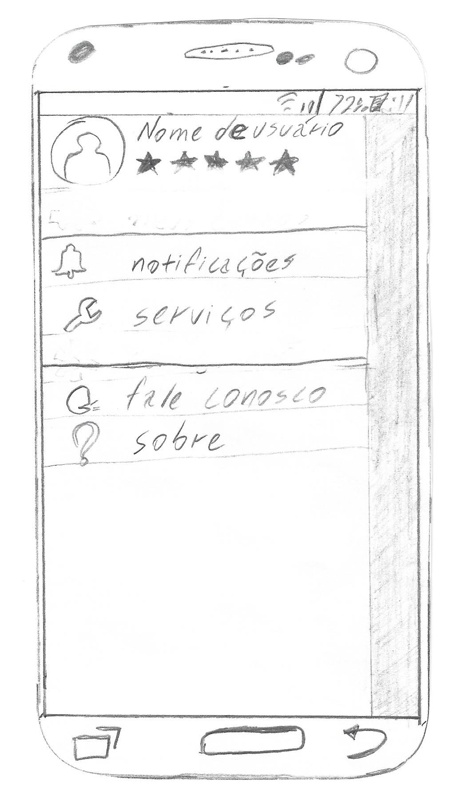
Ao clicar em "Perfil", o usuário é direcionado para a tela de perfil:
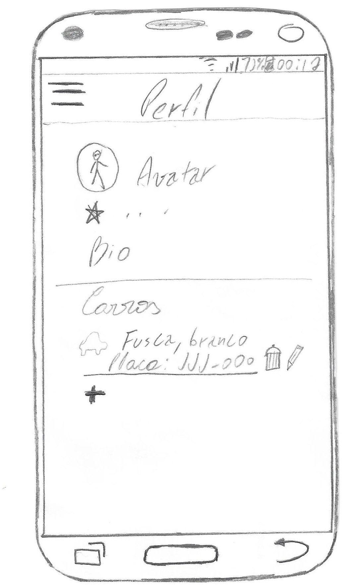
Ao clicar em "Notificações", o usuário é direcionado para a tela de notificações:
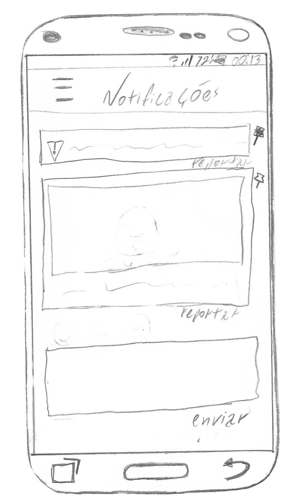
Ao clicar em "Serviços", o usuário é direcionado para a tela de serviços:
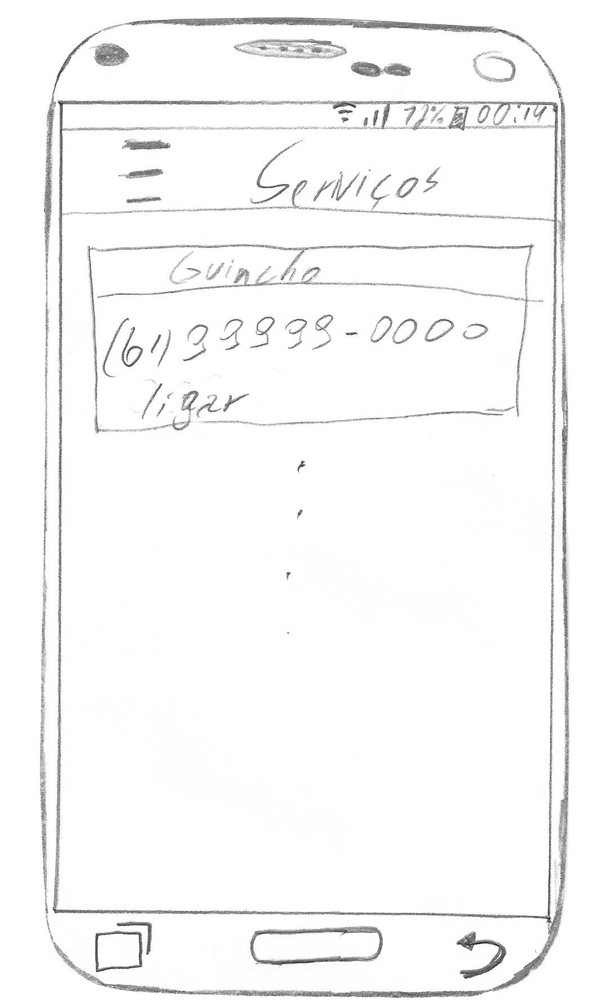
Ao clicar em "Fale Conosco", o usuário é direcionado para a tela de feedback:
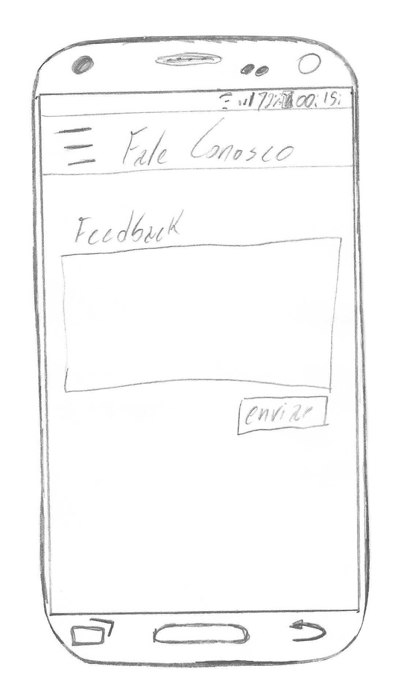
E, por fim, ao clicar em "Sobre", o usuário é direcionado para a tela de serviços:
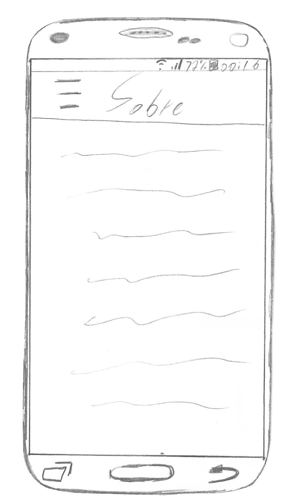
Visões do Protótipo de Alta Fidelidade
Versão 1
Clique na imagem para abrir o protótipo
Link disponível em:
< Versão 1>
Versão 2
Clique na imagem para abrir o protótipo
Link disponível em:
< Versão 2>